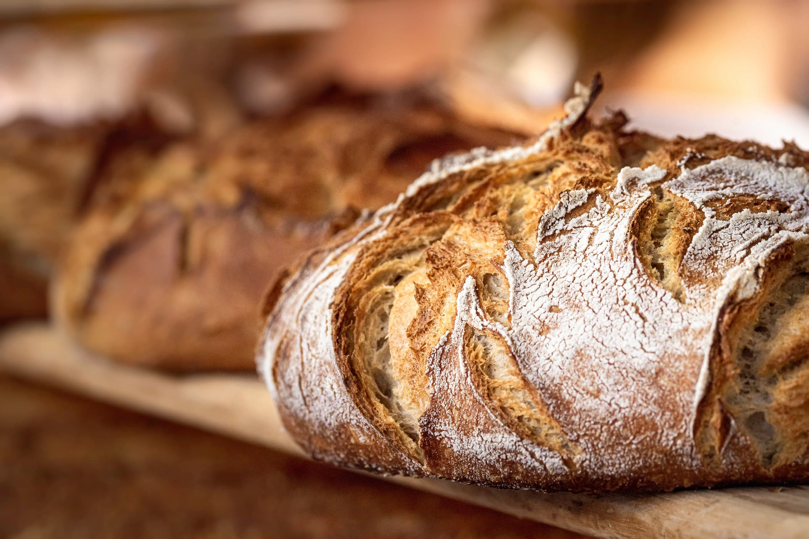
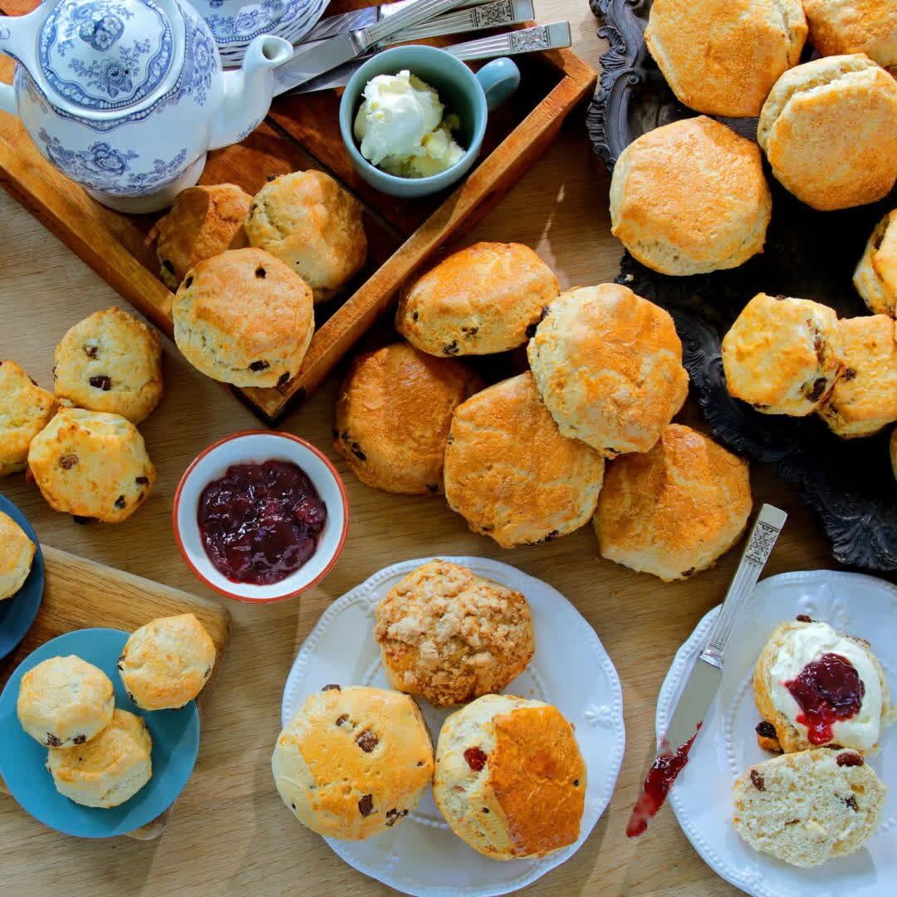
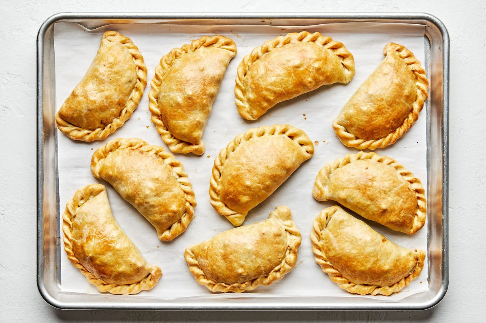
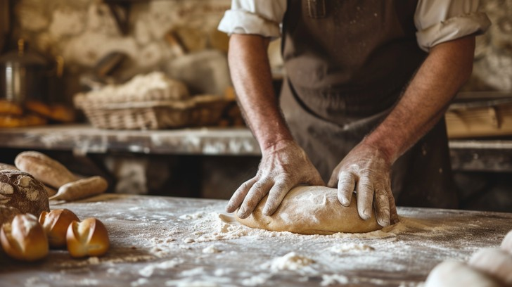

Naturally leavened sourdough, baked fresh in Albuquerque.
Bosque Baking Company is an artisan sourdough bakery in Albuquerque. The loaves are naturally leavened and baked in small batches through the week, alongside pastries, empanadas, and pies.

Stock photo: rustic sourdough loaves with a crackled crust.The Bread Ledger
Breads · 01Every loaf is naturally leavened and baked fresh during the week. This is what comes out of the oven.
- 01Walnut SourdoughToasted walnuts folded into a hearty loaf
- 02Olive SourdoughOlives baked into an open crumb
- 03Green Chile SourdoughMade with New Mexico green chile
- 04Old World RyeA dense, dark rye loaf
- 05Sunflower Seed MultigrainA seeded multigrain loaf
- 06Rustic BaguettesCrisp crust with a chewy center

Stock photo: artisan bread loaves with wheat and flour.
From the Oven
Pastries & More · 02Pastries and morning food for the market run, the office, or the weekend table.

Apricot Scones and Cookies
Apricot scones plus a rotating case of cookies, including the red chile chocolate pecan.
Stock photo: fresh scones with cream and jam.

Empanadas, Pies, and Burritos
Handheld empanadas, triple berry pies by the slice or whole, and breakfast burritos on bake days.
Stock photo: freshly baked empanadas.

Baked Through the Week
Dough is mixed and shaped by hand, then baked in small batches. Call ahead if you need a whole pie or a large bread order.
Stock photo: a baker shaping dough by hand.
At the Growers' Markets
Find Us · 03Bosque Baking Company sells at the Downtown and Corrales Growers' Markets. The same breads and pastries from the bakery, sold at the market table.
Visit the Bakery
Visit · 04Pick up a loaf, a pie, or breakfast on your way through downtown Albuquerque.
Hours
- Wednesday - Friday11am - 6pm
- Saturday9am - 3pm
- Sunday - TuesdayClosed